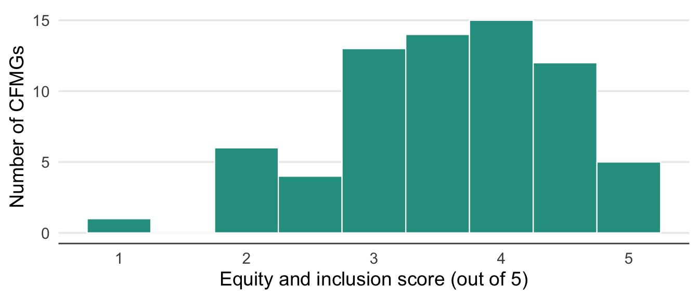
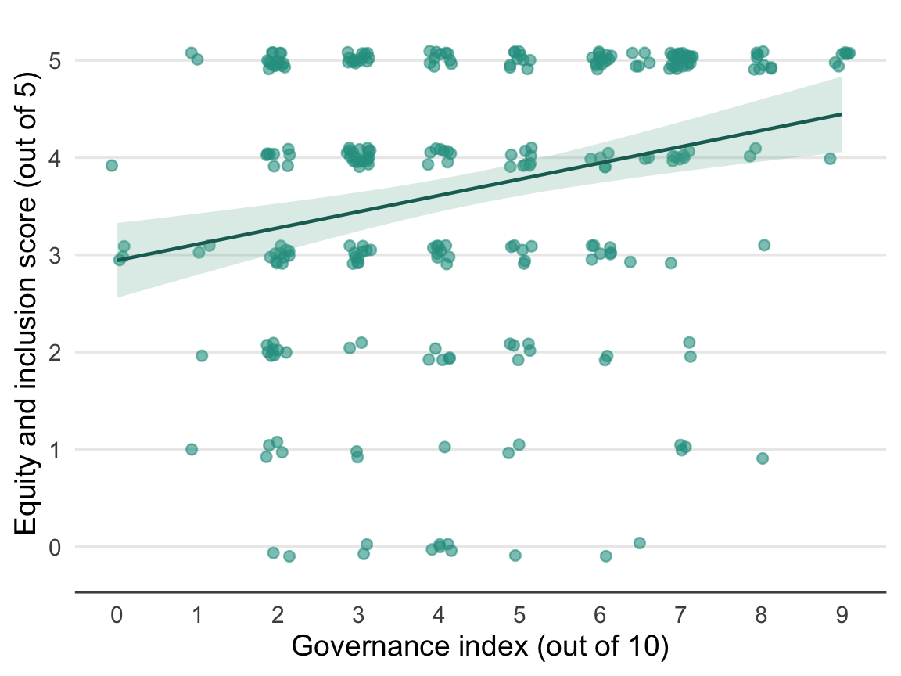

Equity and Inclusion
Summary
The overall picture for equity and inclusion is broadly positive, though with important caveats. A substantial majority of FGD groups reported that the benefits of CFM are being shared equitably and that women benefit from CFM without disproportionately suffering opportunity costs. Notably, a majority of community female FGD groups themselves agreed that women have benefited from CFM. Carbon benefit-sharing agreements between carbon companies and communities are dominated by revenue sharing, while employment and livelihood support components are less commonly included. Responsibility for carbon income sharing decisions within communities was roughly equally split between instances where the CFMG executive makes the decisions and those where the whole CFMG is involved. Importantly, community female and youth FGD groups were significantly more likely than executive and male FGD groups to report inequitable benefit sharing, inadequate participation of women in decision making, and a lack of transparency in benefit sharing. In some CFMGs, community youth groups also identified issues with elite capture and marginalisation of youth. This common divergence in perspective between community members and CFMG executives is a concerning pattern suggesting that a minority of CFMGs have real equity problems that are either not visible from the executive’s perspective or deliberately ignored. Poor transparency in benefit sharing and the non-existence of grievance and redress mechanisms were also noted for many CFMGs. Without functioning formal channels through which equity concerns can be raised and addressed, inequitable outcomes risk going undetected and uncorrected. Strengthening these governance mechanisms is essential if CFM is to deliver equitable outcomes for all community members, including women, youth and other vulnerable groups.
Introduction
In this chapter, we consider the equitable sharing of benefits arising from community forest management (CFM) and what the impacts of CFM are on vulnerable groups.
We hypothesised that CFM benefits would be unevenly distributed, with women, youth, and vulnerable households receiving less benefit than CFMG executives and older men. We predicted that elite capture and transparency gaps would be more visible to community members than to CFMG leaders, and that CFMGs with better governance would report more equitable benefit-sharing. We also expected that transparent mechanisms for grievance and redress would be rare, making it difficult for disadvantaged groups to challenge inequitable outcomes.
Benefit sharing
We asked FGD groups whether the benefits of CFM were equitably distributed (Figure 1). On the one hand, a substantial majority of responses across the FGD groups asserted that benefits were being shared equitably. However, the proportion of community female and community youth groups that felt that benefits were not being shared equitably was significantly higher than for the CFMG executive and community male FGD groups. Moreover, even among the CFMG executive and community male groups, there were some that agreed that benefits were not being shared equitably.
| Model results for equitable benefit sharing — FGD type and governance index | |||
| Estimates are log-odds; reference = Executive FGD. Province variance = 0; CFA-within-province variance = 2.144. Marginal R² = 0.412; conditional R² = NA. n = 217. | |||
| Factor | Estimate | SE | P value |
|---|---|---|---|
| Intercept (Executive FGD) | 2.933 | 1.100 | 0.0077 |
| Female FGD | −2.794 | 0.956 | 0.0035 |
| Male FGD | −0.203 | 1.239 | 0.8701 |
| Youth FGD | −2.870 | 0.943 | 0.0023 |
| Governance index | 0.259 | 0.147 | 0.0772 |
| Pairwise comparisons — FGD type | ||||
| Estimates are log-odds differences on the emmeans scale. Tukey-adjusted p-values. | ||||
| Contrast | Estimate | SE | z ratio | P value |
|---|---|---|---|---|
| Executive - Female | 2.794 | 0.956 | 2.923 | 0.0182 |
| Executive - Male | 0.203 | 1.239 | 0.163 | 0.9984 |
| Executive - Youth | 2.870 | 0.943 | 3.043 | 0.0125 |
| Female - Male | −2.591 | 0.949 | −2.731 | 0.0320 |
| Female - Youth | 0.077 | 0.493 | 0.156 | 0.9987 |
| Male - Youth | 2.668 | 0.945 | 2.823 | 0.0246 |
Individual interviewees were also asked whether the benefits of CFM were equitably shared. Table 3 shows the percentage reporting this broken down by interviewee role. Again a substantial majority of respondents (83% - 92%) thought that benefits were being shared equitably, and the differences among respondents were not significant. However, there was still minority of respondents that did not think benefits were being equitably shared.
| Equitable sharing of benefits, as reported by individual interviewees | ||
| Values represent the % of positive responses. n = the total number of interview responses. A positive response indicates that benefits of CFM are equitably shared. | ||
| Role | n | Agree benefits are equitably shared |
|---|---|---|
| Community member | 31 | 92% |
| CFMG executive member | 63 | 86% |
| Traditional leader | 75 | 83% |
| District Forestry Officer | 56 | 90% |
| Private enterprise rep | 32 | 96% |
| Model results for equitable benefit sharing — individual interviewees | |||
| Estimates are log-odds; reference = Community member. Province variance = 0.619; CFA-within-province variance = 0.325. Marginal R² = 0.096; conditional R² = 0.298. n = 220. | |||
| Factor | Estimate | SE | P value |
|---|---|---|---|
| Intercept (Community member) | 3.449 | 1.489 | 0.0205 |
| CFMG executive member | −0.753 | 0.919 | 0.4128 |
| Traditional leader | −0.938 | 0.931 | 0.3135 |
| District Forestry Officer | −0.205 | 0.954 | 0.8295 |
| Private enterprise rep | 0.903 | 1.321 | 0.4940 |
| Male | −0.266 | 0.650 | 0.6831 |
| Age | −0.011 | 0.021 | 0.6099 |
Carbon income benefit sharing
Company-community arrangements
CFMG executive FGDs reported on the components that were included in their carbon finance benefit-sharing arrangement with the carbon developer (Figure 2). Clearly the agreements are dominated by revenue sharing, with relatively few also containing agreements on employment, infrastructure development and livelihood support.

Within-community sharing
We also asked CFMG executive FGDs about the carbon income sharing arrangements within the community. We first asked who is responsible for the decision-making (Figure 3) and then we asked on what principles the benefit sharing was based (Figure 4). In 12 CFAs, the benefit sharing arrangements are defined in the constitution. Of the remainder, the CFMG executive is responsible for the decision in six, while in seven the entire CFMG is responsible.


According to the responses of the CFMG executives, seven CFAs shared benefits according to community members’ contribution to CFM while six shared them equally among the community households. Meanwhile, only two said that consideration of marginalised or vulnerable groups was a factor in benefit sharing. For 12 of the CFAs, the benefit sharing arrangements are determined in the constitution.
External determination of benefit sharing
We also asked CFMG executive FGDs whether stakeholders outside the community were involved in determining the benefit-sharing arrangement (Figure 5). Again, in 12 CFAs the benefit sharing arrangement is determined in the constitution. Of the remaining CFAs, carbon developers are involved in determining the benefit sharing arrangement in 13 cases, while FD is involved in three cases and an NGO or traditional leader in one case each.

Gender equity
We asked FGD groups whether women benefit from CFM (Figure 6). As can be seen in the figure, across all FGD types a majority of groups reported that women benefit from CFM. However, a minority of FGD groups across all types stated that women do not benefit and, moreover, the proportion of FGD groups reporting that women do not benefit was significantly higher for female and youth FGD groups, compared to CFMG Executive and male groups. The governance index was not a significant prediction of this response.

| Model results for women benefit from CFM — FGD type and governance index | |||
| Estimates are log-odds; reference = Executive FGD. Province variance = 0; CFA-within-province variance = 1.506. Marginal R² = 0.252; conditional R² = 0.487. n = 240. | |||
| Factor | Estimate | SE | P value |
|---|---|---|---|
| Intercept (Executive FGD) | 3.317 | 1.000 | 0.0009 |
| Female FGD | −2.453 | 0.861 | 0.0044 |
| Male FGD | −0.955 | 0.924 | 0.3016 |
| Youth FGD | −2.926 | 0.864 | 0.0007 |
| Governance index | 0.191 | 0.136 | 0.1605 |
| Pairwise comparisons — FGD type | ||||
| Estimates are log-odds differences on the emmeans scale. Tukey-adjusted p-values. | ||||
| Contrast | Estimate | SE | z ratio | P value |
|---|---|---|---|---|
| Executive - Female | 2.453 | 0.861 | 2.847 | 0.0229 |
| Executive - Male | 0.955 | 0.924 | 1.033 | 0.7301 |
| Executive - Youth | 2.926 | 0.864 | 3.387 | 0.0039 |
| Female - Male | −1.498 | 0.696 | −2.151 | 0.1372 |
| Female - Youth | 0.473 | 0.500 | 0.946 | 0.7797 |
| Male - Youth | 1.971 | 0.698 | 2.825 | 0.0244 |
Individual interviewees were also asked whether women benefit from CFM. Table 7 shows the percentage reporting this broken down by interviewee role. Among the individual interviewee respondents a substantial majority agreed that women benefited from CFM. Values varied from 79% of respondents agreeing among traditional leaders to 100% among enterprise representatives. However, these differences among interviewee roles were not significant, and neither was the gender or age of the respondent a significant factor.
| Women benefit from CFM, as reported by individual interviewees | ||
| Values represent the % of positive responses. n = the total number of interview responses. A positive response indicates that women benefit from CFM. | ||
| Role | n | Agree women benefit from CFM |
|---|---|---|
| Community member | 31 | 84% |
| CFMG executive member | 63 | 95% |
| Traditional leader | 75 | 79% |
| District Forestry Officer | 56 | 94% |
| Private enterprise rep | 32 | 100% |
| Model results for women benefit from CFM — individual interviewees | |||
| Estimates are log-odds; reference = Community member. Province variance = 0; CFA-within-province variance = 7.489. Marginal R² = 0.95; conditional R² = NA. n = 239. | |||
| Factor | Estimate | SE | P value |
|---|---|---|---|
| Intercept (Community member) | 1.820 | 1.947 | 0.3498 |
| CFMG executive member | 0.849 | 1.241 | 0.4939 |
| Traditional leader | −1.249 | 0.972 | 0.1992 |
| District Forestry Officer | 1.661 | 1.206 | 0.1682 |
| Private enterprise rep | 24.168 | 70,705.864 | 0.9997 |
| Male | −0.520 | 1.062 | 0.6247 |
| Age | 0.048 | 0.030 | 0.1090 |
Women disproportionately suffer opportunity costs
We asked FGD groups whether women disproportionately suffer the opportunity costs of CFM (Figure 7). The results are almost a perfect mirror image of the the results the previous question on whether women benefit from CFM. Across all FGD types most groups said ‘No’, but there was a significantly greater proportion of female and youth FGD groups that felt women did suffer higher opportunity costs.

| Model results for women disproportionately suffering opportunity costs — FGD type and governance index | |||
| Estimates are log-odds; reference = Executive FGD. Province variance = 0.126; CFA-within-province variance = 0. Marginal R² = 0.394; conditional R² = NA. n = 268. | |||
| Factor | Estimate | SE | P value |
|---|---|---|---|
| Intercept (Executive FGD) | −5.132 | 1.172 | 0.0000 |
| Female FGD | 3.359 | 1.065 | 0.0016 |
| Male FGD | 0.202 | 1.452 | 0.8893 |
| Youth FGD | 2.280 | 1.105 | 0.0391 |
| Governance index | 0.159 | 0.105 | 0.1303 |
| Pairwise comparisons — FGD type | ||||
| Estimates are log-odds differences on the emmeans scale. Tukey-adjusted p-values. | ||||
| Contrast | Estimate | SE | z ratio | P value |
|---|---|---|---|---|
| Executive - Female | −3.359 | 1.065 | −3.154 | 0.0087 |
| Executive - Male | −0.202 | 1.452 | −0.139 | 0.9990 |
| Executive - Youth | −2.280 | 1.105 | −2.063 | 0.1654 |
| Female - Male | 3.157 | 1.066 | 2.961 | 0.0162 |
| Female - Youth | 1.079 | 0.496 | 2.175 | 0.1301 |
| Male - Youth | −2.078 | 1.107 | −1.878 | 0.2376 |
Individual interviewees were also asked whether women disproportionately suffer the opportunity costs of CFM. Table 11 shows the percentage reporting this broken down by interviewee role. Again the results were a mirror image of those obtained for whether women benefitted from CFM. Only this time age was a significant factor in determining responses, with older respondents more likely to state that women did experience higher opportunity costs.
| Women disproportionately suffer opportunity costs, as reported by individual interviewees | ||
| Values represent the % of positive responses. n = the total number of interview responses. | ||
| Role | n | Agree women disproportionately suffer opportunity costs |
|---|---|---|
| Community member | 31 | 29% |
| CFMG executive member | 63 | 18% |
| Traditional leader | 75 | 18% |
| District Forestry Officer | 56 | 21% |
| Private enterprise rep | 32 | 7% |
| Model results for women disproportionately suffering opportunity costs — individual interviewees | |||
| Estimates are log-odds; reference = Community member. Province variance = 0.293; CFA-within-province variance = 0. Marginal R² = 0.09; conditional R² = 0.165. n = 239. | |||
| Factor | Estimate | SE | P value |
|---|---|---|---|
| Intercept (Community member) | −2.045 | 0.976 | 0.0363 |
| CFMG executive member | −0.792 | 0.586 | 0.1765 |
| Traditional leader | −0.946 | 0.584 | 0.1054 |
| District Forestry Officer | −0.217 | 0.609 | 0.7217 |
| Private enterprise rep | −1.458 | 0.884 | 0.0993 |
| Male | −0.549 | 0.431 | 0.2025 |
| Age | 0.031 | 0.015 | 0.0401 |
Women participate in decision making
We asked FGD groups whether women participate in CFM decision making (Figure 8). The results were very similar to those obtained for the question on whether women benefited from CFM. A substantial majority of groups stated that women did participate in decision making, but a significantly greater proportion of female and youth FGD groups said they did not.

| Model results for women participation in CFM decision making — FGD type and governance index | |||
| Estimates are log-odds; reference = Executive FGD. Province variance = 0.491; CFA-within-province variance = 1.446. Marginal R² = 0.356; conditional R² = 0.595. n = 267. | |||
| Factor | Estimate | SE | P value |
|---|---|---|---|
| Intercept (Executive FGD) | 4.576 | 1.351 | 0.0007 |
| Female FGD | −2.575 | 1.109 | 0.0202 |
| Male FGD | −0.077 | 1.448 | 0.9575 |
| Youth FGD | −3.957 | 1.146 | 0.0006 |
| Governance index | 0.118 | 0.148 | 0.4228 |
| Pairwise comparisons — FGD type | ||||
| Estimates are log-odds differences on the emmeans scale. Tukey-adjusted p-values. | ||||
| Contrast | Estimate | SE | z ratio | P value |
|---|---|---|---|---|
| Executive - Female | 2.575 | 1.109 | 2.322 | 0.0930 |
| Executive - Male | 0.077 | 1.448 | 0.053 | 0.9999 |
| Executive - Youth | 3.957 | 1.146 | 3.453 | 0.0031 |
| Female - Male | −2.498 | 1.114 | −2.243 | 0.1118 |
| Female - Youth | 1.382 | 0.569 | 2.430 | 0.0716 |
| Male - Youth | 3.880 | 1.154 | 3.363 | 0.0043 |
Individual interviewees were also asked whether women participate in CFM decision making. Table 15 shows the percentage reporting this broken down by interviewee role. Very high proportions of individual interviewees responded that women did praticipate in decision making, varying from 92% among traditional leaders and DFOs to 100% among community members. There were no significant differences among interviewee roles in their responses to this question.
| Women participate in CFM decision making, as reported by individual interviewees | ||
| Values represent the % of positive responses. n = the total number of interview responses. | ||
| Role | n | Agree women participate in decision making |
|---|---|---|
| Community member | 31 | 100% |
| CFMG executive member | 63 | 95% |
| Traditional leader | 75 | 92% |
| District Forestry Officer | 56 | 92% |
| Private enterprise rep | 32 | 97% |
| Model results for women participation in CFM decision making — individual interviewees | |||
| Estimates are log-odds; reference = Community member. Province variance = 0.891; CFA-within-province variance = 0.359. Marginal R² = 0.902; conditional R² = 0.929. n = 252. | |||
| Factor | Estimate | SE | P value |
|---|---|---|---|
| Intercept (Community member) | 21.616 | 351.236 | 0.9509 |
| CFMG executive member | −19.157 | 351.230 | 0.9565 |
| Traditional leader | −20.226 | 351.230 | 0.9541 |
| District Forestry Officer | −19.524 | 351.230 | 0.9557 |
| Private enterprise rep | −18.832 | 351.231 | 0.9572 |
| Male | 0.246 | 0.738 | 0.7386 |
| Age | 0.019 | 0.031 | 0.5468 |
Transparency in benefit sharing
We asked FGD groups whether there is transparency in CFM benefit sharing (Figure 9). Interestingly, the answers to this question were more varied than to the previous questions. However, across all FGD types a majority of groups agreed that there was transparency in the benefit sharing. However, all the community FGD types were significantly more likely to disagree as compared to the CFMG Executive FGDs. In addition, governance index score was a highly significant predictor of the probability that a FGD group would agree that benefit sharing was transparent.
| Model results for transparency in CFM benefit sharing — FGD type and governance index | |||
| Estimates are log-odds; reference = Executive FGD. Province variance = 0.142; CFA-within-province variance = 0.306. Marginal R² = 0.278; conditional R² = 0.365. n = 242. | |||
| Factor | Estimate | SE | P value |
|---|---|---|---|
| Intercept (Executive FGD) | 1.184 | 0.597 | 0.0472 |
| Female FGD | −1.153 | 0.567 | 0.0420 |
| Male FGD | −2.306 | 0.564 | 0.0000 |
| Youth FGD | −2.023 | 0.559 | 0.0003 |
| Governance index | 0.340 | 0.104 | 0.0011 |
| Pairwise comparisons — FGD type | ||||
| Estimates are log-odds differences on the emmeans scale. Tukey-adjusted p-values. | ||||
| Contrast | Estimate | SE | z ratio | P value |
|---|---|---|---|---|
| Executive - Female | 1.153 | 0.567 | 2.033 | 0.1757 |
| Executive - Male | 2.306 | 0.564 | 4.085 | 0.0003 |
| Executive - Youth | 2.023 | 0.559 | 3.616 | 0.0017 |
| Female - Male | 1.153 | 0.472 | 2.440 | 0.0697 |
| Female - Youth | 0.869 | 0.472 | 1.841 | 0.2539 |
| Male - Youth | −0.283 | 0.437 | −0.648 | 0.9161 |
Individual interviewees were also asked whether there is transparency in CFM benefit sharing. Table 19 shows the percentage reporting this broken down by interviewee role. A substantial majority of individual interviewees agreed that benefit sharing was transparent, varying from 76% among traditional leaders to 93% among CFMG Executive members. The differences among interviewee roles were not significant.
| Transparency in CFM benefit sharing, as reported by individual interviewees | ||
| Values represent the % of positive responses. n = the total number of interview responses. | ||
| Role | n | Agree there is transparency in benefit sharing |
|---|---|---|
| Community member | 31 | 92% |
| CFMG executive member | 63 | 93% |
| Traditional leader | 75 | 76% |
| District Forestry Officer | 56 | 79% |
| Private enterprise rep | 32 | 80% |
| Model results for transparency in CFM benefit sharing — individual interviewees | |||
| Estimates are log-odds; reference = Community member. Province variance = 0.44; CFA-within-province variance = 0.465. Marginal R² = 0.123; conditional R² = 0.312. n = 237. | |||
| Factor | Estimate | SE | P value |
|---|---|---|---|
| Intercept (Community member) | 3.305 | 1.416 | 0.0196 |
| CFMG executive member | 0.070 | 0.981 | 0.9431 |
| Traditional leader | −1.529 | 0.869 | 0.0784 |
| District Forestry Officer | −1.390 | 0.941 | 0.1397 |
| Private enterprise rep | −1.506 | 0.989 | 0.1280 |
| Male | 0.445 | 0.524 | 0.3961 |
| Age | −0.016 | 0.019 | 0.3924 |
We examined which mechanisms are being used to achieve transparency in benefit sharing among the community female, male, and youth FGDs (Figure 10). As can be seen from the figure, community meetings were recognised as by far the most important mechanism for achieving transparency. It is noteworthy that written agreements and financial reports were relatively infrequently mentioned. Although community meetings may be the most important to communicate, the formal CFMG processes such as annual financial reporting are also critical underpinnings of transparency. As our results from the governance chapter also showed, reporting by CFMGs does not appear to be adequate.
Grievance and Redress
We asked FGD groups whether their CFMG has a grievance and redress mechanism in place (Figure 11). As can be seen in the figure, a substantial majority of FGD groups reported that they had a grievance and redress mechanism. However, a small number of Executive FGDs reported they did not have any mechanism, which is concerning. Moreover, a larger number of community FGD groups said there was no grievance and redress mechanism, which suggests that information about the availability of the process is not always being adequately communicated. The differences in responses between Executive FGDs and all three community groups were significant.

| Model results for grievance and redress mechanism — FGD type | |||
| Estimates are log-odds; reference = Executive FGD. Province variance = 0.168; CFA-within-province variance = 0.056. Marginal R² = 0.125; conditional R² = 0.181. n = 270. | |||
| Factor | Estimate | SE | P value |
|---|---|---|---|
| Intercept (Executive FGD) | 2.642 | 0.513 | 0.0000 |
| Female FGD | −1.570 | 0.540 | 0.0036 |
| Male FGD | −1.303 | 0.560 | 0.0199 |
| Youth FGD | −1.791 | 0.555 | 0.0013 |
| Pairwise comparisons — FGD type | ||||
| Estimates are odds ratios on the response scale. Tukey-adjusted p-values. | ||||
| Contrast | Odds ratio | SE | z ratio | P value |
|---|---|---|---|---|
| Executive / Female | 4.807 | 2.595 | 2.909 | 0.0190 |
| Executive / Male | 3.680 | 2.060 | 2.328 | 0.0918 |
| Executive / Youth | 5.995 | 3.328 | 3.226 | 0.0069 |
| Female / Male | 0.765 | 0.314 | −0.652 | 0.9148 |
| Female / Youth | 1.247 | 0.502 | 0.549 | 0.9470 |
| Male / Youth | 1.629 | 0.699 | 1.137 | 0.6666 |
Individual interviewees were also asked whether their CFMG has a grievance and redress mechanism. Table 23 shows the percentage reporting this broken down by interviewee role and as can be seen most stated that there was a mechanism in place. However, minority of around 10-20% stated that the CFMG lacked any such process. The differences among interviewee roles were not significant.
| Grievance and redress mechanism, as reported by individual interviewees | ||
| Values represent the % of positive responses. n = the total number of interview responses. | ||
| Role | n | Grievance and redress mechanism |
|---|---|---|
| Community member | 31 | 97% |
| CFMG executive member | 63 | 90% |
| Traditional leader | 75 | 86% |
| District Forestry Officer | 56 | 77% |
| Private enterprise rep | 32 | 86% |
| Model results for grievance and redress mechanism — individual interviewees | |||
| Estimates are log-odds; reference = Community member. Province variance = 0.255; CFA-within-province variance = 0. Marginal R² = 0.111; conditional R² = 0.175. n = 240. | |||
| Factor | Estimate | SE | P value |
|---|---|---|---|
| Intercept (Community member) | 3.250 | 1.549 | 0.0359 |
| CFMG executive member | −1.205 | 1.128 | 0.2853 |
| Traditional leader | −1.579 | 1.089 | 0.1472 |
| District Forestry Officer | −2.155 | 1.122 | 0.0548 |
| Private enterprise rep | −1.588 | 1.201 | 0.1861 |
| Male | 0.791 | 0.479 | 0.0987 |
| Age | −0.009 | 0.020 | 0.6400 |
| Pairwise comparisons — interviewee role | ||||
| Estimates are odds ratios on the response scale. Tukey-adjusted p-values. | ||||
| Contrast | Odds ratio | SE | z ratio | P value |
|---|---|---|---|---|
| cfmg_member / cfmg_exec_member | 3.337 | 3.764 | 1.068 | 0.8228 |
| cfmg_member / trad_leader | 4.850 | 5.283 | 1.450 | 0.5955 |
| cfmg_member / dfo | 8.631 | 9.685 | 1.921 | 0.3061 |
| cfmg_member / NGO_rep | 4.894 | 5.879 | 1.322 | 0.6774 |
| cfmg_exec_member / trad_leader | 1.453 | 0.899 | 0.604 | 0.9745 |
| cfmg_exec_member / dfo | 2.586 | 1.551 | 1.585 | 0.5073 |
| cfmg_exec_member / NGO_rep | 1.467 | 1.078 | 0.521 | 0.9853 |
| trad_leader / dfo | 1.780 | 1.065 | 0.963 | 0.8717 |
| trad_leader / NGO_rep | 1.009 | 0.747 | 0.012 | 1.0000 |
| dfo / NGO_rep | 0.567 | 0.377 | −0.853 | 0.9138 |
We also examined which mechanisms are being used to achieve grievance and redress among the community female, male, and youth FGDs (Figure 12). As can be seen, the main mechanism include community meetings, mediation by traditional leaders and formal grievance and redress committees. The focus on local solutions is a positive finding.

Impact on poverty
We asked the community female, male, and youth FGDs to identify the ways in which CFM has had an impact on poverty in their communities (Figure 13). Increase in household incomes was the most commonly stated impact on poverty followed by increased nutrition and food security. However, it is interesting to note the number of different types of responses that were given.

Barriers to poorer community members
We asked the community female, male, and youth FGDs to identify the barriers that prevent poorer community members from benefiting from CFM (Figure 14). Most often mentioned was “Limited information”. However, more concerning were responses like, “Excluded from decisions”, “Unequal benefit distribution” and “No trust in leadership”.

Addressing challenges
We asked the community female, male, and youth FGDs to suggest solutions to address the barriers facing poorer community members in benefiting from CFM (Figure 15). Far and away the most popular solution for addressing these barriers was community meetings.

Equity and inclusion index
To summarise the overall equity and inclusion performance of each CFMG, we constructed an equity and inclusion score (0–5) by summing five binary indicators reported by FGD groups — equitable benefit sharing, women benefiting from CFM, women participating in decision making, transparency in benefit sharing, and existence of a grievance and redress mechanism — each scored as 1 (positive outcome reported) or 0 (no positive outcome). The distribution of equity and inclusion scores across CFMGs is shown in Figure 16 (Appendix III). We then modelled this score using a linear mixed model with FGD type and the governance index as predictors, and random intercepts for province and CFA within province, to test whether governance and FGD type were significant predictors of overall equity and inclusion performance (Table 26, Figure 17).

| Model results for equity and inclusion performance — FGD type and governance index | |||
| Linear mixed model with random intercepts for province and CFA within province. Reference = Executive. Province variance = 0.095; CFA-within-province variance = 0.233; residual variance = 1.355. Marginal R² = 0.19; conditional R² = 0.348. n = 273. | |||
| Factor | Estimate | SE | P value |
|---|---|---|---|
| Intercept | 3.589 | 0.277 | 0.0000 |
| Female | −0.873 | 0.195 | 0.0000 |
| Male | −0.664 | 0.199 | 0.0010 |
| Youth | −1.373 | 0.197 | 0.0000 |
| Governance index | 0.171 | 0.046 | 0.0004 |

As can be seen from the model results, all three community FGD groups had significantly lower equity and inclusion scores compared to the CFMG Executive FGDs. Thus, the community groups all scored their CFM lower on equity and inclusion compared to the CFMG Executives. This indicates a pervasive difference in perception between communities and the CFMG Executives concerning the fairness of the CFM processes. The governance index was also a highly significant predictor of the equity and inclusion score, indicating that better governed CFMGs had better equity and inclusion scores.
Discussion
Through the FGDs and individual interviews, we investigated a wide range of equity and inclusion indicators, covering benefit sharing, gender equity, transparency, grievance and redress, and poverty impacts.
The most striking and consistent finding is a divergence in perspective by FGD group. Across virtually every indicator — equitable benefit sharing, women benefiting from CFM, women suffering disproportionate opportunity costs, women’s participation in decision making, and transparency in benefit sharing — community female and youth groups were significantly more likely than CFMG executive and male groups to report negative outcomes. Given that CFMG executives and community males may typically be better informed about formal governance arrangements, it is possible that this divergence reflects an information asymmetry rather than disagreement about conditions. However, it may also reflect that the benefits and costs of CFM are being distributed unevenly, in ways that are visible to female and youth community members but not acknowledged — or perhaps not noticed — by those in the CFMG executives. It is also possible that these differences in perspective reflect elite capture or corruption.
Notwithstanding these these issues, the overall picture is more positive than might have been expected. A clear majority of all FGD groups — including community female groups — reported that benefits are being shared equitably and that women benefit from CFM. Most female groups also stated that women do not disproportionately suffer opportunity costs and that women participate in CFM decision making. This is somewhat surprising, given that natural resource management decisions in Zambia are traditionally the purview of male community members. It may be that the formal governance structures mandated by CFM — elections, executive positions with female representation, and documented benefit-sharing arrangements — are providing women with a degree of recognition and voice that they would not otherwise have had. These results may also explain why women FGDs also had a more positive take on the effect of CFM on SFM, as mentioned in that chapter.
Carbon benefit-sharing agreements between companies and communities are almost entirely structured around revenue sharing. Employment, infrastructure investment and livelihood support are less commonly included in these agreements. While revenue sharing provides a direct financial return, it means communities that have not yet received a carbon payment have little to show for CFM. Diversifying the components of company-community agreements could broaden both the distribution of benefits and community buy-in. The fact that only the CFMG Executives determine the sharing of carbon revenue in a number of CFMGs is concerning. This is a lot of authority for the CFMG Executive to assume, and even if the benefit sharing is done appropriately it is likely to attract accusations of nepotism or corruption. We suggest that there should be greater standardisation of benefit-sharing arrangements, both between the carbon developer and the community and within the community. It is also essential that the FD provide greater oversight to ensure agreed upon benefit-sharing arrangements are being properly implemented.
The reported poverty impacts of CFM — primarily increased household incomes and new income-generating activities — are broadly consistent with the economic transformation chapter findings. However, barriers to poorer community members benefiting remain, including limited access to resources, capital and markets. The solutions communities themselves proposed — financial support, targeted programmes for marginalised groups, and better governance — align closely with the governance and economic transformation recommendations identified elsewhere in this report.
In conclusion, the equity and inclusion outcomes of CFM in Zambia are broadly positive but uneven. The divergence between female and youth perspectives and those of CFMG executives is the most important finding of this chapter. It signals that equity problems exist in a subset of CFMGs, and that strengthening transparency, grievance and redress mechanisms and community-wide engagement is essential to ensuring CFM benefits reach all community members equitably.